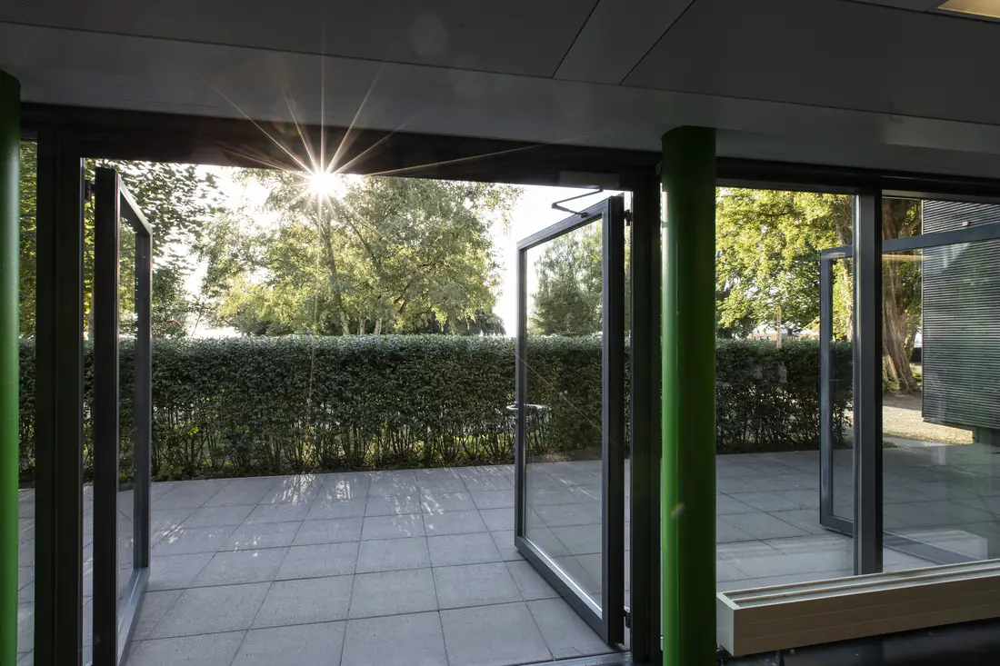

Aktuell-Knopf: drei Bewegungen.
Der Knopf «Offene Lehrstelle» steht im Startbild vor «Kompetenzen entdecken» und «Fünf Schritte». Eingestellt ist C (Kundenentscheid 21.11.2026). Wechsel per Attribut data-attn am Knopf (puls, atem, glanz). Bei «Bewegung reduzieren» im Betriebssystem steht alles still.

A · PulsEin grüner Punkt sendet ruhig Ringe aus, alle 2,4 s. Dezent, wirkt wie «live». Offene Lehrstelle
B · AtemDie Fläche füllt sich langsam grün und wird wieder leer, alle 3,6 s. Fällt am stärksten auf.
Offene Lehrstelle
C · Glanz (eingestellt)Ein heller Lichtstreif läuft alle 5 s über den Knopf. Edel, zieht den Blick kurz an.
Offene Lehrstelle